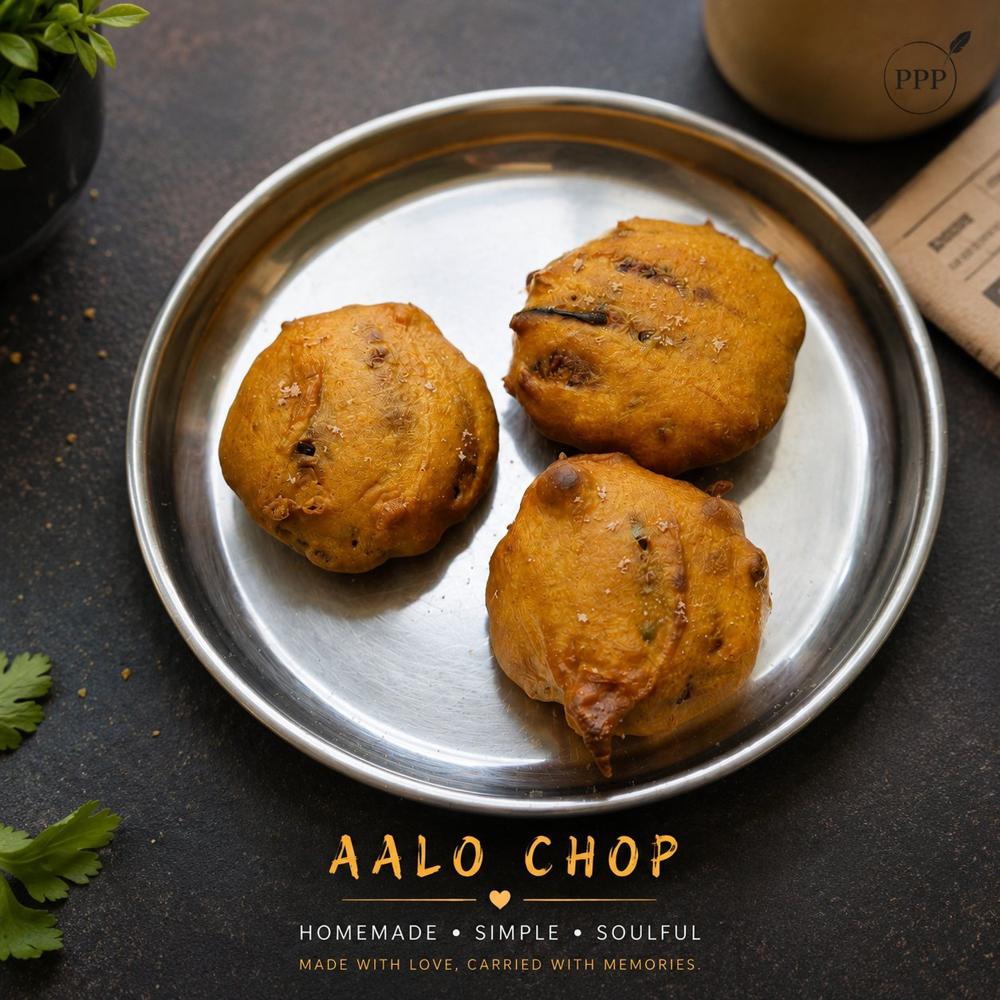

Cooking
Chicken Kosha with Soft Air-Fryer Naan
Good spices, soft naan, and that homemade comfort feeling.
Read more →Recipes, kitchen experiments, and food memories — simple, homemade, and full of heart.
Good spices, soft naan, and that homemade comfort feeling.
Read more →

Simple, spicy, homemade — not restaurant perfect, but made with love.
Read more →